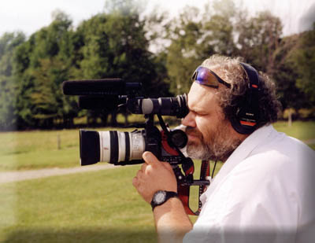

Poetic Video, founded in 2000, provides high quality and cost effective production of event, documentary, and artistic biography style videos capturing romance, emotion and the stories of people's lives. Poetic Video’s documentary style is built on classical music to inspire the audience in a poetic fashion, capturing the thrill and dynamics of the unique architecture of distinctive buildings, bridges, statues and monuments, inviting you to feel the essence of the place, and letting you experience the atmosphere of every day situations on the streets or in the parks and discover views unknown even to the natives. Petr, the owner of Poetic Video produced several documentary and instructional videos for the European market. During his studies at The University of Vermont, he incorporated event and music video production into his areas of interest. Petr is well known as a musician, composer and teacher in the Burlington area of Vermont. Petr's technical expertise includes video composition and editing and 3D computer generated graphics using a variety of tools. See Petr's latest art documentary, "Stanislav Stanek My Blues and Greens" movie, the 2009 winner of the BEIJING FILM FESTIVAL CRYING MONKEY AWARD for non-fiction film.


| Petr Kepka | Phone: 802-862-0844 | |
| Poetic Video | ||
| 116 Colton Place | E-mail: poeticvideo@comcast.net | |
| Williston, VT 05495 | Web: http://www.poeticvideo.com | |